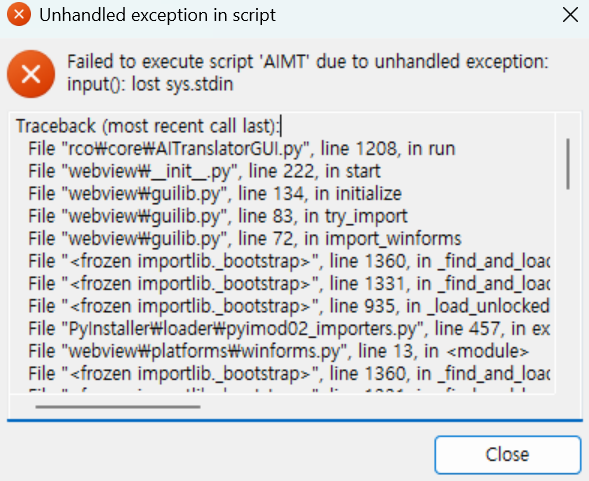

자주 나오는 질문
문서 기준: AIMT PRO 1.15 계열
최종 편집 일시: 2026-06-19
먼저 확인할 것
- 프로젝트 폴더가 올바른지 확인합니다.
- 추출, 번역, 적용 중 어느 단계에서 문제가 생겼는지 구분합니다.
- 오류 메시지가 있다면 문구를 그대로 확인합니다.
- API 관련 문제는 키, 모델, 사용량, 네트워크를 순서대로 확인합니다.
문제 해결 순서
- 최근에 바꾼 설정을 확인합니다.
- 작은 범위로 다시 실행해 같은 문제가 반복되는지 확인합니다.
- 화면에 표시된 오류 메시지와 작업 단계를 함께 확인합니다.
- 엔진별 가이드에서 해당 형식의 제한 사항을 확인합니다.
질문과 답변
1. 이상한 오류만 나오고 실행이 안돼요.
{kind=link}

- 윈도우 내장 압축프로그램으로 압축을 풀 경우,
오류가 나타나며 실행이 안되는 상황이 발생할 수 있습니다.
- 반디집, 7zip 혹은 winrar 등 별도로 개발된 압축 프로그램을 활용해서 다시 압축을 풀어보세요.
2. 작은 창만 잠깐 나왔다 사라지고 시작이 안돼요.

- HS 가속이 활성화된에서 환경에서 실행불가 이슈가 제보되었습니다.
- HS 가속을 비활성화 후 시도해보세요.
3. 로딩 창만 나오고 실행이 안돼요.
- %appdata%/Local/AIMT/logs 폴더에 AIMT_DIAGNOSTIC 어쩌고 파일이 생성됐는지 확인해보세요.
만약 파일이 있다면 커뮤니티(아카라이브 AIMT 채널) 또는 디스코드를 통해 파일과 함께 문의해주세요.
-
또는 아래 프로그램들을 하나씩 삭제 및 재설치 해보세요.
- 마이크로소프트 .NET 9.0 데스크톱 런타임
https://dotnet.microsoft.com/ko-kr/download/dotnet/9.0
- 마이크로소프트 엣지 웹뷰2
https://developer.microsoft.com/ko-kr/microsoft-edge/webview2?form=MA13LH&ch=1#download
- Visual C++ Redistributable
https://learn.microsoft.com/en-us/cpp/windows/latest-supported-vc-redist?view=msvc-170
- 마이크로소프트 .NET 9.0 데스크톱 런타임
3. 영문판 번역하고 싶어요. / 추출 결과가 없어요.
- 만약 번역하시려는 게임이 영어권에서 개발되었다면 언어패턴설정에서 영어를 체크해보세요.
- 일한, 영한 등 서로다른 언어를 번역할 땐 언어별로 프롬프트를 분리하여 사용하는 것이 좋습니다.
-
한글로 번역해서 적용했는데 다시 추출해서 번역을 수정하고 싶어요.
- 언어패턴설정에서 한글 (완성형)을 체크 후 추출해보세요.
4. AI 모델의 설정값들은 무엇을 기준으로 정하면 되나요?
- 번역 엔진 설정 을 참고해보시면 도움이 될 수 있을 것 같습니다.
5. 번역이 진행되지 않아요.
-
번역 설정 중 timeout 이 너무 낮은 값으로 설정되어 있지 않는지 확인해보세요.
- 30~60으로 넉넉하게 설정하거나, 아예 체크를 해제하는 것도 괜찮습니다.
- API 키에 이상이 생겼을 수도 있습니다. 키를 바꾸고도 동일한 문제가 계속된다면 User_Data 폴더 속 Log 폴더를 압축해서 커뮤니티 또는 디스코드를 통해 제보해주세요.
6. 번역 후 적용했는데 게임이 제대로 번역이 안됐어요.
- 최종 결과를 두고 증상을 판단하기엔 방대한 번역과정 상 원인으로 의심될 사유가 너무나 다양합니다.
- 우선 번역이 정상적으로 이루어졌는지 번역파일들부터 눈으로 확인해보세요.
- 번역된 파일이 너무 적거나, 있어야하는 텍스트가 없다면 추출이 잘 됐는지부터 확인하셔야 합니다.
- 만약 게임 연출 상 번역되어야 하는 텍스트가 추출이 안됐다면 커뮤니티에 문의해주세요.
게임 데이터, 추출 파일, Log 폴더를 각각 압축해서 3개의 압축파일을 제공해주시면
제가 대신 확인해드릴 수 있습니다.
7. 번역을 하다가 일이 생겨서 중단했는데, 전에 한 게 없어졌어요.
- 중단된 번역을 이어하는 기능은 1.13.0 기준, 공식 지원 대상이 아닙니다.
-
하지만 번역 범위 지정을 활용한다면 우회적으로 기존 번역을 이어하는 것이 가능합니다.
- 범위 지정은 단일 파일에 대해서만 지원하고 있기에 준비가 필요합니다.
- 중단된 파일을 잠시 번역 폴더에서 다른 곳으로 옮겨놓고, 다른 파일들만 적용합니다.
-
적용이 끝난 파일들은 삭제하고, 중단된 파일을 본래 자리로 되돌립니다.
- 이 때, 번역 폴더엔 중단된 파일 하나만 남게 됩니다.
- 화면상의 파일 목록에서 중단된 파일만 선택하고 번역 버튼을 선택합니다.
- 번역 설정 맨 아래 번역 범위에 번역이 필요한 범위를 지정하고 번역을 진행합니다.
- 번역 작업이 종료되면 최종적으로 온전히 번역으로 채워진 파일만 남게 됩니다.
8. API 키가 많으면 많을수록 좋다고했는데 오류가 너무 많이 나와요.
- 동시에 사용하는 API 키가 많을수록 작업속도가 빠른 것은 사실이지만
AI API 는, 특히 무료로 사용하시는 경우엔 RPM(분당요청횟수)의 한도가 생각보다 많이 낮습니다.
유료 API 라면 비교적 한도가 널널하니 사정에 맞춰 이용하시면 되겠습니다.
또한 무료 API 를 제한 우회 목적으로 복수 사용하시는 것은 해당 API 의 AI정책을 위반할 수도 있으니 주의하셔서 사용하시길 바랍니다. 이에 관해선 API KEY 설정 에서도 안내해드리고 있습니다.
주의: 위 안내를 작성하고 있는 제 개인적으로는 결제프로필 1개에 1티어 키를 3개 연결해두고 사용중입니다 😉
9. 번역을 시작해도 오류만 뜨다가 자동중단으로 끝나버려요.
- 선택한 모델에 이상이 있거나, 일시적인 서버 오류일 가능성이 높습니다.
- Gemini 2.5 시리즈를 사용할 경우 이 현상이 자주 발생합니다.
- 다른 모델을 이용하거나 충분히 시간이 지나고 다시 시도해보세요.
그래도 해결되지 않을 때
문의할 때는 사용한 AIMT 버전, 게임 형식, 어느 단계에서 실패했는지, 표시된 오류 메시지, 재현 순서를 함께 정리하면 원인을 더 빠르게 찾을 수 있습니다.